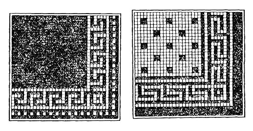

-

8(0152)31-25-61
-

kst@ggkst.by
-

http://ggkst.by
8(0152)31-25-61
kst@ggkst.by
http://ggkst.by
Карта 10: Настилка полов из карт ковровой мозаики
Состав технологических операций. Сортировка карт ковровой мозаики; разбивка покрытия; укладка маяков и растворной прослойки; укладка карт
фризового ряда; укладка карт фона.
Инструменты, приспособления, инвентарь. Плиточная лопатка; растворная лопата; молоток-кулачок; стальные штыри; кисть-макловица;
рейка-правило длиной 1,5 м; деревянный полутерок длиной 300...800 мм; киянка или хлопуша; нож для разрезки бумажной основы карт; грабли; стальной скребок
или проволочная щетка. Рейка Болотина. Двухметровая контрольная рейка; строительный уровень; рулетка или складной метр; угольник. Ведро; ковш для отделочных
работ; разметочный шнур в корпусе. Подножки; водонепроницаемые наколенники.
Материалы. Карты ковровой мозаики, наклеенные лицевой стороной на плотную бумагу
(ГОСТ 6787-80). Водный раствор ПАВ
(1 %-ный раствор хлористого калия или 0,5 %-ный раствор хлористого алюминия).
>ГОСТ 17057-80). Цементно-песчаный раствор марки 150 подвижностью 3…3,5 см.
Сухой цемент марки 400 для припудривания растворной прослойки перед укладкой карт.
Рис. 1. Организация рабочего места при настилке полов из карт ковровой мозаики: 1 - угловая карта фризового ряда, 2 - прямые карты фризового ряда, 3 - заделка, 4 - карты основного фона, 5 - растворная прослойка, 6 - причальный шнур, 7 - штабеля карт ковровой мозаики, 8 - передвижной ящик-тележка с раствором, 9 - бак с водой, 10 - рабочие места плиточника
При устройстве 1 м2 растворной прослойки расходуется 0,02 м3 раствора, сухого цемента - 150...200 г.
Схема организации рабочего места. Рабочее место организуют так, как показано на рис. 1.
Последовательность выполнения технологических операций. Укладку карт ковровой мозаики ведут продольными рядами слева направо и справа налево
и в обратном направлении (рис. 2). К работе приступают после очистки и увлажнения основания.
Сортировка карт ковровой мозаики. В соответствии с заданным рисунком отбирают карты для укладки во фризовый ряд, заделку и основной фон.
Бумажную основу карт в отдельных местах прокалывают или прорезают, чтобы предупредить появление воздушных мешков. С учетом разметки заготовляют целые и
неполномерные карты.
Разбивка покрытия и укладка временных маяков. Рейкой Болотина размечают местоположение захваток, устанавливают временные маячные ряды 9 (рис. 3) из
керамических плиток по уровню 7. На границе захватки вбивают стальные штыри и натягивают причальный шнур для обозначения наружной стороны фриза.
Укладка растворной прослойки. Основание смачивают водой, и на захватке (по ширине карты) под заданный уровень расстилают раствор. Разровненную граблями
прослойку выравнивают рейкой-правилом.
Перед укладкой карт поверхность растворной прослойки припорашивают сухим цементом и заглаживают полутерком до появления цементного молока.
Укладка угловой карты фризового ряде. По причальному шнуру и угольнику угловую карту фризового ряда укладывают на растворную прослойку бумажной
основой вверх; уложенную карту осаживают хлопушей под уровень маячного ряда, чтобы швы между плитками ковра были заполнены раствором.
Намокание бумажной основы над швами свидетельствует о заполнении швов. В местах, где бумага не намокла, делают проколы, выпуская воздух.
Рис. 2. Последовательность (показана стрелкой) укладки карт ковровой мозаики
Углы фризового ряда с рисунком получают из двух карт, последовательно раскраивая их поперечным (рис. 4, а) и ступенчатым разрезом (рис. 4, б).
Части раскроенного ковра соединяют под прямым углом (рис. 4, в).
Укладка прямых фризовых карт. Уложив угол фриза, по причальному шнуру укладывают карты фризового ряда.
По мере укладки карт фризового ряда снимают временный маячный ряд (вдоль стены). В зазор между стеной и фризом на слой раствора укладывают
продольные полосы рядовых карт.
Завершение фризового ряда и укладка карт основного фона. Фризовой ряд завершают угловой картой, уложенной перпендикулярно фризовому ряду по
натянутому причальному шнуру.
После разметки ширины захватки и натягивания причального шнура по подготовленной растворной прослойке укладывают карты следующего ряда,
являющегося фоном покрытия. Завершают ряд поперечно уложенной картой фриза.
Рис. 3. Разбивка покрытия и установка временных маяков: 1 - растворная прослойка, 2 - причальный шнур, 3 - карта, укладываемая бумажной основой вверх, 4 - свежеуложенный ряд карт, 5 - угольник, 6 - выровненный слой растворной прослойки, 7 - уровень, 8 - контрольная рейка, 9 - временный маячный ряд
Ширину швов между уложенными картами регулируют вставками - деревянными клиньями. При одинаковой ширине швов стыки между уложенными картами не будут
выделяться на поверхности покрытия.
Для предупреждения искривления швов и соблюдения правильности рисунка каждый ряд укладываемых карт выверяют по угольнику и причальному шнуру.
Причальным шнуром фиксируют очередную полосу-захватку, равную ширине карты, увлажняют основание водой и укладывают растворную прослойку.
Карты ковровой мозаики укладывают вдоль захватки продольными рядами слева направо и обратно с переходом на следующий ряд. В ходе работ контролируют
горизонтальность укладки карт, для чего один конец контрольной рейки ставят на фриз, а другой - на временный маячный ряд из плиток.
Варианты рисунков покрытий из карт ковровой мозаики приведены на рис. 5.
Контроль качества. Перед укладкой карты ковровой мозаики для фриза, фона и заделки сортируют по размеру, цвету и рисунку; на них не должно быть
отслоившихся и дефектных плиток (с трещинами, отколотыми углами). Измерительными инструментами контролируют качество покрытия.
Оно не должно иметь искривления линий швов в местах соединения карт; рисунок должен соответствовать проектному.
Отклонения поверхности покрытия от плоскости при проверке двухметровой контрольной рейкой, прикладываемой в различных направлениях,
не должны превышать 4 мм. Уступы между уложенными картами допускаются не более 1 мм. Поверхность покрытия не должна иметь выбоин,
цвет и рисунок должны соответствовать проектному.
Рис. 4. Раскрой рядовой фризовой карты: а - разрезка карты поперек, 6 - ступенчатый разрез, в - угол фриза из двух половинок (1, 2) карты
Рис. 5. Рисунки покрытий из карт ковровой мозаики
Трудовые затраты. Норма времени на 1 м2 пола или фриза и норма выработки на 1 чел-дн при устройстве покрытий из карт
ковровой мозаики следующие:
| Площадь покрытия, м2: полов: | Нормы времени, чел-ч | Нормы выработки, м2 |
| До 5 | 0,78 | 10,25 |
| Свыше 5 | 0,59 | 13,5 |
| Фризов: | ||
| До 5 | 0,99 | 8,08 |
| Свыше 5 | 0,77 | 10,4 |
Техника безопасности. Нож для разрезки карт ковровой мозаики во время перерывов в работе нужно хранить в специальном чехле.
При работе с раствором и плитками следует пользоваться резиновыми перчатками или напальчниками для предохранения рук, при устройстве покрытия -
влагонепроницаемыми наколенниками и подножками.
Контрольные вопросы. Из каких технологических операций складывается устройство покрытий из карт ковровой мозаики?
Как обеспечить надежное сцепление карт ковровой мозаики с основанием? Как контролируют горизонтальность покрытия из карт ковровой мозаики?
Зачем перед укладкой карт ковровой мозаики припорашивают растворную прослойку сухим цементом? Как организуют рабочее место при укладке карт ковровой мозаики?
Какие требования предъявляют к качеству покрытия из карт ковровой мозаики? Какие требования техники безопасности необходимо выполнять при настилке полов из карт ковровой мозаики?
Карта 11 — Заполнение швов и отделка плиточных покрытий